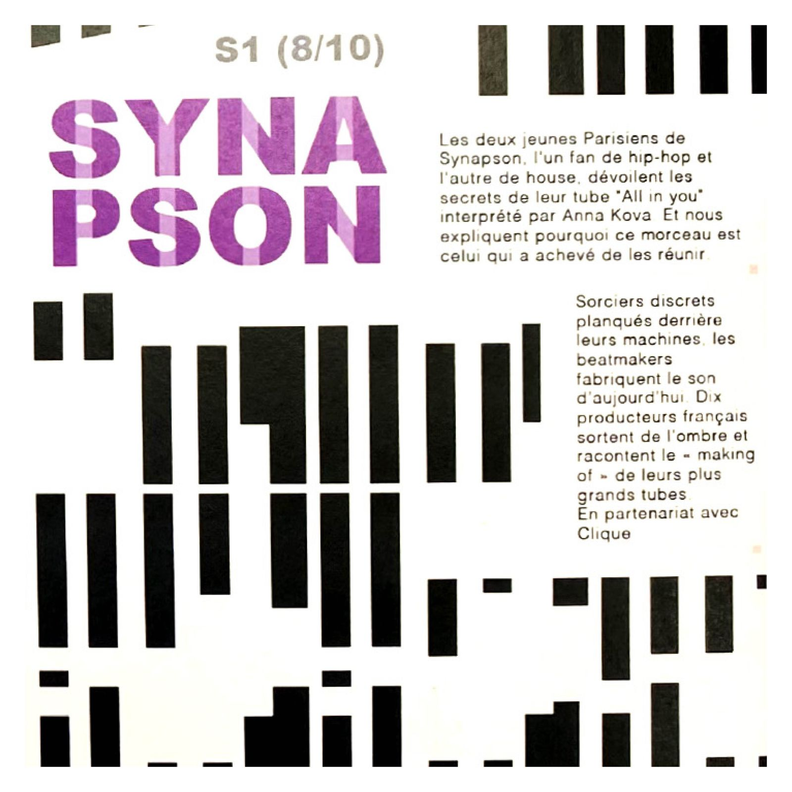

Beatmakers
Fictional project of a front and back cover page of a booklet for Télérama in collaboration with
the podcast series «Beatmakers, music is created in the shadows» of Arte radio.
The cover’s purpose is to enlighten these beatmakers that are unknown. I worked
on the notion of hybridization to make my visuals.